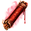

Свиток кровавого прозрения
Предметы / Ресурсы
Открыть в интерактивной вики →
| Вес | 1 |
|---|---|
| Цена | 0 |
Описание
После использования выравнивает уровень знания Кровавых арканов до уровня того, кто знаком с ними лучше всего. Действует на время одной экспедиции. Продает  Вулгарф
Вулгарф
Вулгарф| После использования выравнивает знание Кровавых арканов до уровня самого знающего участника. Действует одну вылазку. |
Рецепт
Покупка: 3kk + 1x  Гроссмейстерский глиф + 1x
Гроссмейстерский глиф + 1x  Багряный элемент
Багряный элемент
Гроссмейстерский глиф + 1x Багряный элементПрименение
|
Способы получения
|